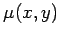
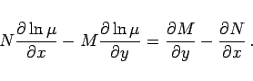
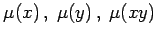
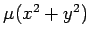
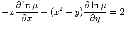
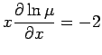
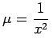

Inhalt Index DeskTop Bronstein

 Differentialgleichungen Gewöhnliche Differentialgleichungen Differentialgleichungen 1. Ordnung Wichtige Integrationsmethoden
Differentialgleichungen Gewöhnliche Differentialgleichungen Differentialgleichungen 1. Ordnung Wichtige Integrationsmethoden


Integrierender Faktor wird eine Funktion  genannt, wenn die Gleichung
| Mdx+Ndy=0 | (9.10a) |
durch Multiplikation mit in eine exakte Differentialgleichung übergeht. Der integrierende Faktor genügt der Differentialgleichung
|  | (9.10b) |
Jede beliebige partikuläre Lösung dieser Gleichung ist ein integrierender Faktor. In vielen Fällen ist der integrierende Faktor von der speziellen Form  oder .
| Beispiel |
|
Es ist die Differentialgleichung (x2+y)dx-xdy =0 zu lösen. Die Gleichung für den integrierenden Faktor lautet . Ein integrierender Faktor, der von y unabhängig ist, ergibt sich aus  zu . Multiplikation der gegebenen Differentialgleichung mit |